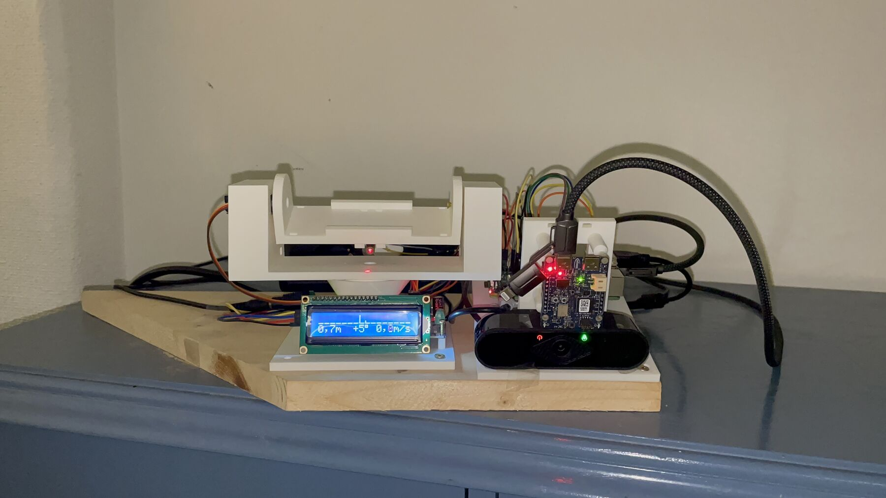
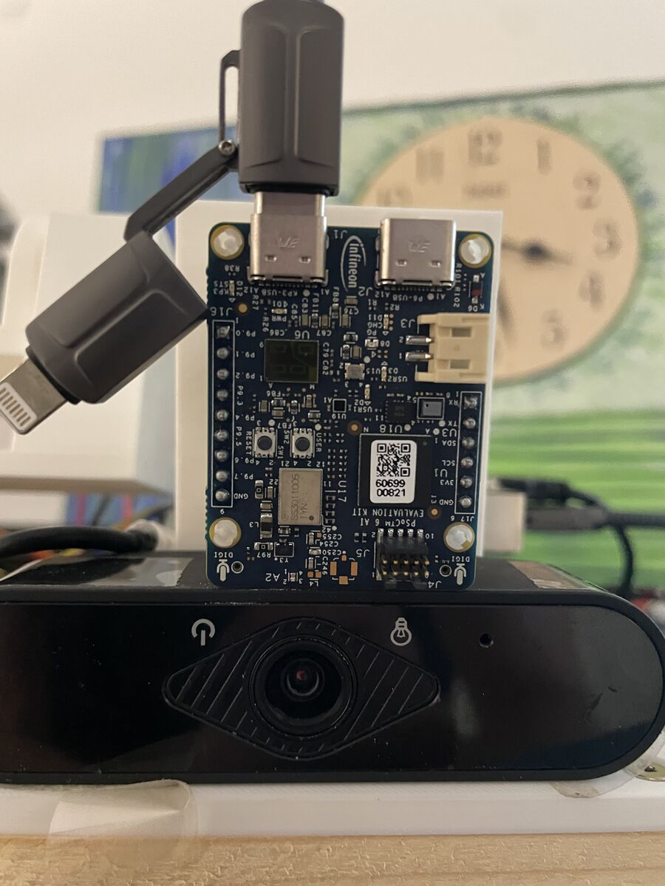
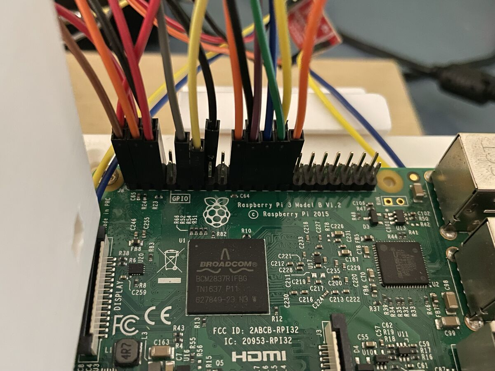
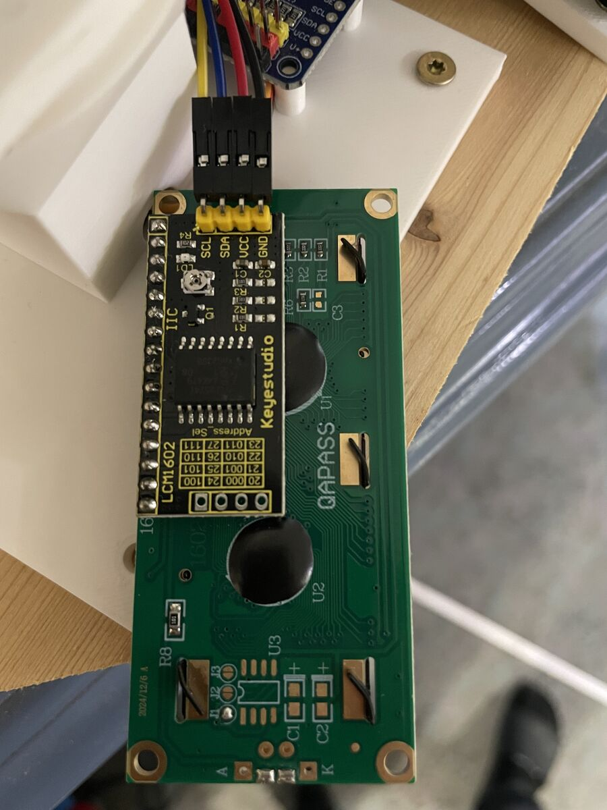
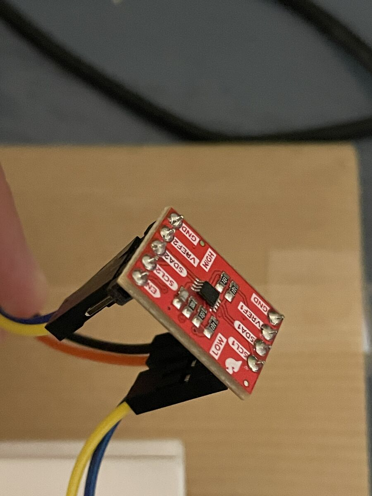
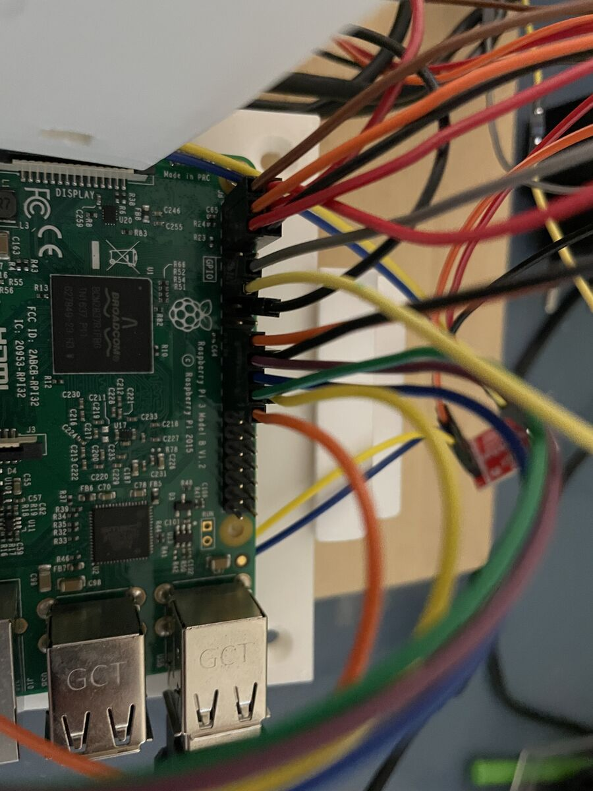
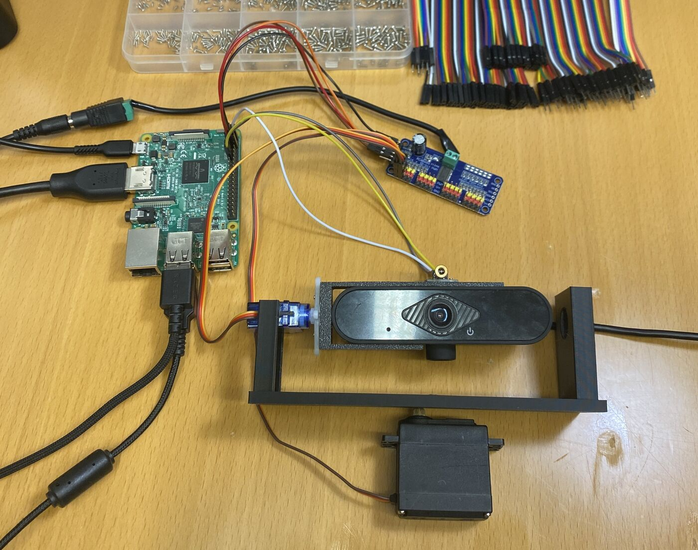
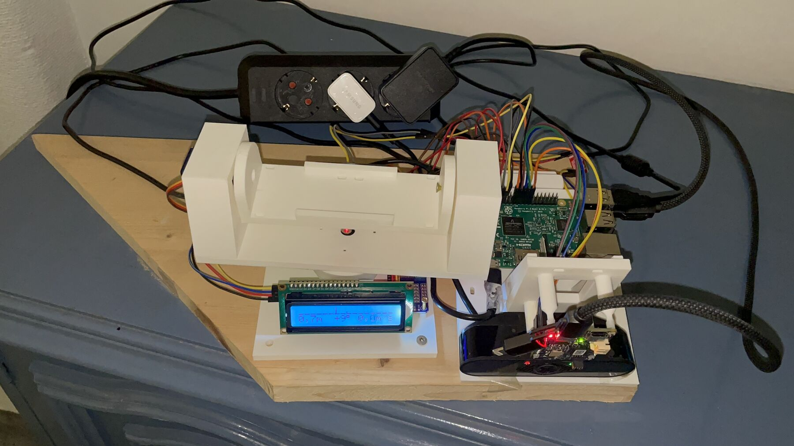
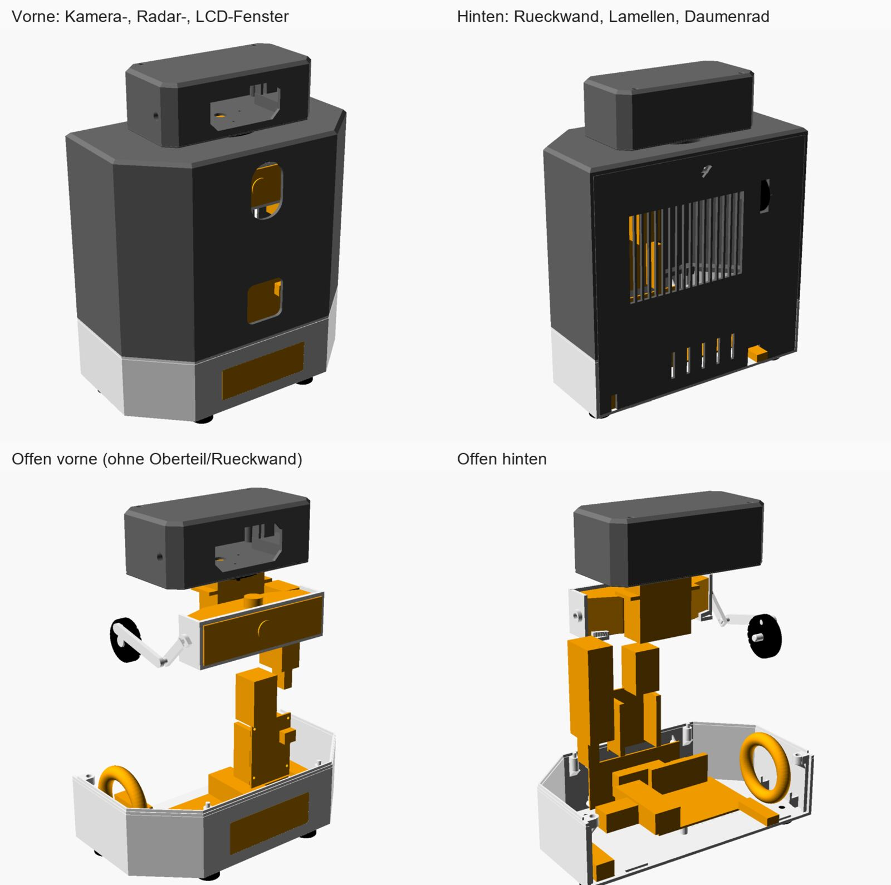

Projektstudienarbeit Mikrocomputertechnik · TH Rosenheim · 2026
Radar-Kamera-Tracking.
Ein 60‑GHz-Radar misst Entfernung, Geschwindigkeit und Winkel. Eine Kamera ergänzt Richtung und Höhe. Zusammen steuern sie einen Schwenk-Neige-Kopf, der einen Laserpunkt auf die Person richtet – der Laser zeigt das Ergebnis an, er misst nichts.
Bildschirmaufnahme der Weboberfläche. Das Kamerabild darin ist ein komprimierter Live-Stream vom Raspberry Pi übers WLAN und ruckelt deshalb leicht. Erkennung und Tracking laufen davon unabhängig direkt auf dem Pi.
Vom Echo zum Laserpunkt.
Alle 50 Millisekunden laufen die Daten durch vier Stufen auf zwei Prozessoren.
Radar misst
Auf dem PSoC 6: Range-Doppler-FFT, CA-CFAR-Detektion und Monopuls-Winkel, in C geschrieben.
Tracker schätzt
Auf dem Raspberry Pi: Ein IMM-Kalman-Filter mit Zuordnung macht aus Detektionen eine stabile Spur.
Fusion verbindet
Die Kamera findet das Farbziel und liefert Seite und Höhe. Im Dunkeln führt das Radar allein.
Gimbal zeigt
Zwei Servos am PCA9685 folgen der Spur mit Spielkompensation, der Laser markiert das Ziel.
Eine Leitkonsole im Browser.
Der Pi liefert eine eigene Weboberfläche: Radar-Blickfeld, Kamerabild, Zielhöhe an einer Figur, Laser an/aus und sicheres Herunterfahren. Getestete Einstellungen sind gesperrt, bis man sie freischaltet, und ein eingebautes Handbuch erklärt jede Ansicht.
- Python
- OpenCV
- Web-UI
- Simulator
Gemessen, nicht geschätzt.
Jede Zahl stammt aus aufgezeichneten Testläufen, direkt am Gerät mitgeschnitten und danach ausgewertet.
| Test A · statisch | Ziel auf 2,5 m, Positionen −1,2 / 0 / +1,2 m, je drei Anfahrten von links und rechts. Grenzen sind Servospiel und Totzonen. |
|---|---|
| Test B · gehend | Gehen entlang einer 2,5-m-Linie, je 40 s, sechs Läufe. Die Höhe kommt nur von der Kamera. |
| Im Dunkeln | Ohne Kamerabild führt das Radar: Die Seite ist gröber, der Laser bleibt auf Brusthöhe. |
| Fehlersuche | Ein Beispiel: Sprünge von 22 cm überstanden sechs Hypothesen, bis sich zeigte, dass der Laser lose in der Fassung saß. Festgeklebt: 4–7 cm. |
Hardware, von Hand verkabelt.
Zwei Boards, zwei Netzteile, ein 3D-gedruckter Gimbal und ein LCD, das zeigt, wem der Laser folgt.






| Infineon CY8CKIT-062S2-AI | PSoC 6 mit Radar BGT60TR13C: Signalverarbeitung, SPI-Slave zum Pi, treibt das LCD |
|---|---|
| Raspberry Pi 3 Model B | Tracker, Fusion, Farberkennung, Servo- und Laseransteuerung, Weboberfläche |
| USB-Kamera | 640 × 360, 80° horizontal, Richtung und Höhe des Ziels |
| Gimbal | PCA9685 mit MG996R (Schwenk) und SG90 (Neigung), Servostrom aus eigenem 5-V/3-A-Netzteil |
| Laser | KY-008, 650 nm, Klasse 3R, vom Pi geschaltet – nur an, wenn der Bediener ihn einschaltet |
| Anzeige | LCD1602 über I²C mit Pegelwandler PCA9306, weil die PSoC-Pins nicht 5-V-fest sind |
Oktober 2026
Version 2. Ein Gehäuse.
Alles vom Holzbrett zieht in ein einziges gedrucktes Gehäuse mit 190 × 100 × 241 mm, mit Sensorkopf obendrauf – nur mit Hardware, die schon da war.
In OpenSCAD konstruiert, mit Passungstests geprüft.
Zwölf Teile plus Testdrucke für Presssitze, Schraublöcher und das Servohorn. Jedes Bauteil wurde vorher vermessen, der Freigang von mindestens 2 mm per Skript geprüft. Gebaut, verkabelt und neu kalibriert am 10. Oktober.
- OpenSCAD
- Passungstests
- FDM-Druck
- Kalibrierung
-

Erster Prototyp
Raspberry Pi, Kamera, zwei Servos und ein Laserpointer – verfolgt farbige Ballons.
-

Version 1 abgegeben
Radar, Kamerafusion, LCD, Leitkonsole und Bericht, vermessen mit Test A und B.
-

Version 2 im Gehäuse
Gedruckt, montiert und kalibriert: seitlich 1–2 cm nach einem Neustart.
Software, testbar ohne Hardware.
Ein Simulator für PSoC und Radar lässt die ganze Kette auf dem Laptop laufen, mit derselben Bedienung wie am Gerät.
| Firmware (C) | Radar-DSP, SPI-Protokoll mit Frames, LCD-Treiber, Anzeigelogik; geflasht per pyOCD direkt vom Pi |
|---|---|
| Pi-Host (Python) | Kalman-/IMM-Tracker, Zuordnung, Priorisierung, Fusion, Servotreiber, Laser-Sicherheitslogik, Weboberfläche |
| Tests und Werkzeuge | 312 Python-Tests, ein PC-Test des LCD-Treibers in C, Kalibrier- und Mitschnittwerkzeuge |
| Dokumentation | Arbeitsprotokolle nach dem Schema Problem, Herangehensweise, Versuche und Ergebnis, dazu ein vollständiger Bericht mit Schaltplan |
Sicherheit eingebaut
Der Laser der Klasse 3R geht nur an, wenn der Bediener ihn einschaltet, und ist beim Beenden des Programms oder Herunterfahren garantiert aus. Ab Schulterhöhe zeigt die Oberfläche eine rote Warnung.